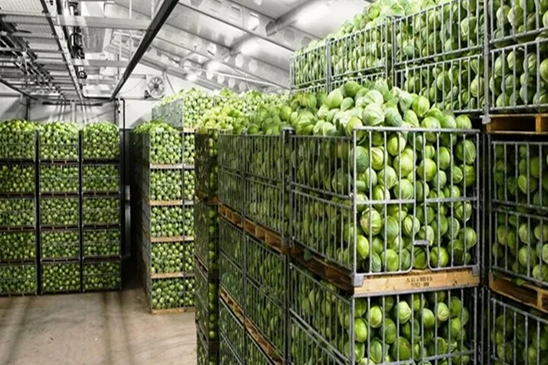

Овощехранилища
ConstructCo — строим надежную инфраструктуру для устойчивого развития вашего бизнеса
Овощехранилище — это специализированный складской объект, предназначенный для длительного и безопасного хранения овощной продукции с сохранением её товарного вида, вкусовых качеств и питательной ценности. Такие сооружения играют ключевую роль в агропромышленной отрасли, позволяя эффективно управлять запасами, выравнивать сезонные колебания поставок и обеспечивать стабильное присутствие продукции на рынке круглый год
Качественно спроектированное и построенное овощехранилище — это не просто место хранения, а важный логистический и технологический узел. Оно позволяет существенно снизить потери урожая за счёт точного контроля микроклимата, защищает продукцию от внешних воздействий и увеличивает срок её хранения без потери качества. Это напрямую влияет на рентабельность хозяйства, снижает расходы на повторную переработку и утилизацию, а также повышает конкурентоспособность производителя
ConstructCo осуществляет комплексное проектирование и строительство овощехранилищ с учётом особенностей хранимой продукции, климатических условий региона и требований логистики, строго соблюдая строительные и санитарные нормы. Мы ведём строительство «под ключ», контролируя все этапы работ, взаимодействие с подрядчиками, сроки, качество и бюджет. Внедряем современные инженерные системы вентиляции, охлаждения, управления микроклиматом и автоматизации, адаптированные под условия хранения овощей. Также оказываем консультационную поддержку и техническое сопровождение после ввода объекта в эксплуатацию
Строительство овощехранилищ с ConstructCo — это гарантия качества, надёжности и соответствия современным требованиям хранения сельхозпродукции